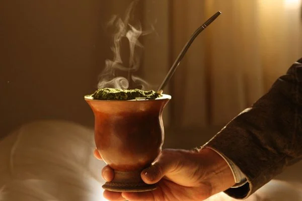

Chimarrão

"Chimarrão"! The best way to start the day!
Let's learn how to make a good Chimarrão. A traditional hot tea (Mate) from South America.
It's very simple, in fact, to make a good "Chimarrão". But to do so, you're going to need some things.
Let's make some!
Ingridients
- A recipient for the tea: a gourd. ( In brazil it's call "Cuia")
- 2/3 recipient of "Erva Mate"
- Hot Water ( approximately 70*C, or 158 *F)
Directions
- Fill two thirds of a gourd (the bowl where the mate is taken) with mate.
- Then, make a mound on one side of the gourd and pour warm or hot water up to the mouth.
- Wait 5 minutes before drinking to allow time for the herb to swell.
- The first sip should be spit out because it always comes with a little mate powder.
- If you want to repeat, you don't need to add more mate, just fill the gourd with water again.
Enjoy your drink with beloved ones!
Click here for more Recipes